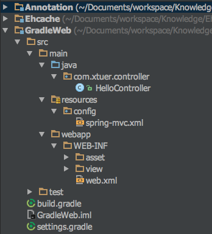
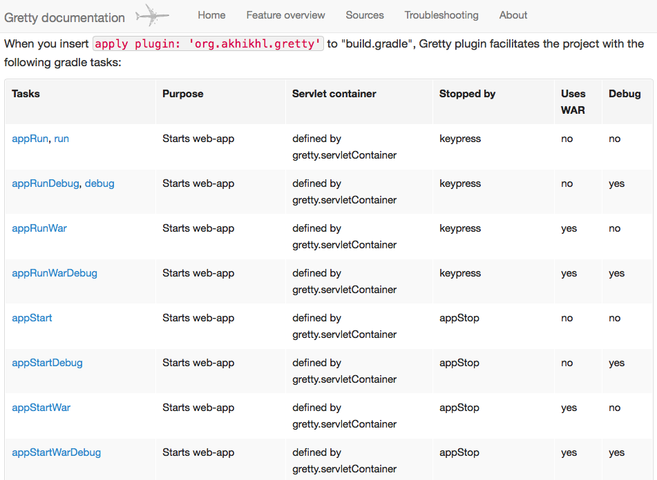

项目目录结构 (asset, view, config 目录是为了管理文件而添加的，不是必须的):

1. build.gradle
使用 Greety 启动嵌入式 Tomcat 或者 Jetty，具体参考
http://blog.csdn.net/xiejx618/article/details/38322537
不配置 servletContainer, 默认为 ‘jetty9’
这个值可以是 ‘jetty7’, ‘jetty8’, ‘jetty9’, ‘tomcat7’, ‘tomcat8’
1
2
3
4
5
6
7
8
9
10
11
12
13
14
15
16
17
18
19
20
21
22
23
24
25
26
27
28
29
30
31
32
33
34
35
36
37
38
39
40
41
42
43
44
45
46
47
48
49
50
51
52
53
54
55
56
57
| group 'com.xtuer'
version '1.0-SNAPSHOT'
apply plugin: 'java'
apply plugin: 'maven'
apply plugin: 'war'
apply plugin: 'org.akhikhl.gretty'
buildscript {
repositories {
jcenter()
}
dependencies {
classpath 'org.akhikhl.gretty:gretty:1.2.4'
}
}
gretty {
port = 8080
contextPath = '/'
servletContainer = 'tomcat7'
debugSuspend = false
managedClassReload = true
recompileOnSourceChange = false
}
tasks.withType(JavaCompile) {
sourceCompatibility = JavaVersion.VERSION_1_8
targetCompatibility = JavaVersion.VERSION_1_8
}
[compileJava, compileTestJava, javadoc]*.options*.encoding = 'UTF-8'
repositories {
mavenLocal()
mavenCentral()
}
ext {
jstlVersion = '1.2'
servletVersion = '3.1.0'
springVersion = '4.1.1.RELEASE'
}
dependencies {
compile(
"org.springframework:spring-webmvc:$springVersion",
"javax.servlet:jstl:$jstlVersion"
)
providedCompile("javax.servlet:javax.servlet-api:$servletVersion")
testCompile "junit:junit:4.12"
}
|
2. web.xml
1
2
3
4
5
6
7
8
9
10
11
12
13
14
15
16
17
18
19
20
21
22
23
24
25
26
27
28
29
30
31
32
33
34
35
36
37
38
39
40
41
42
43
44
45
46
47
48
49
50
51
52
53
54
55
56
57
58
59
60
61
62
63
64
65
66
| <?xml version="1.0" encoding="UTF-8"?>
<web-app xmlns="http://xmlns.jcp.org/xml/ns/javaee"
xmlns:xsi="http://www.w3.org/2001/XMLSchema-instance"
xsi:schemaLocation="http://xmlns.jcp.org/xml/ns/javaee
http://xmlns.jcp.org/xml/ns/javaee/web-app_3_1.xsd"
version="3.1"
metadata-complete="true">
<filter>
<filter-name>characterEncodingFilter</filter-name>
<filter-class>org.springframework.web.filter.CharacterEncodingFilter</filter-class>
<init-param>
<param-name>encoding</param-name>
<param-value>UTF-8</param-value>
</init-param>
<init-param>
<param-name>forceEncoding</param-name>
<param-value>true</param-value>
</init-param>
</filter>
<filter-mapping>
<filter-name>characterEncodingFilter</filter-name>
<url-pattern>/*</url-pattern>
</filter-mapping>
<context-param>
<param-name>contextConfigLocation</param-name>
<param-value>
</param-value>
</context-param>
<listener>
<listener-class>org.springframework.web.context.ContextLoaderListener</listener-class>
</listener>
<servlet>
<servlet-name>springmvc</servlet-name>
<servlet-class>org.springframework.web.servlet.DispatcherServlet</servlet-class>
<init-param>
<param-name>contextConfigLocation</param-name>
<param-value>classpath:config/spring-mvc.xml</param-value>
</init-param>
<load-on-startup>1</load-on-startup>
</servlet>
<servlet-mapping>
<servlet-name>springmvc</servlet-name>
<url-pattern>/</url-pattern>
</servlet-mapping>
</web-app>
|
3. spring-mvc.xml
1
2
3
4
5
6
7
8
9
10
11
12
13
14
15
16
17
18
19
20
21
22
23
24
25
26
27
28
29
30
31
32
33
34
35
36
37
| <?xml version="1.0" encoding="UTF-8"?>
<beans xmlns="http://www.springframework.org/schema/beans"
xmlns:xsi="http://www.w3.org/2001/XMLSchema-instance"
xmlns:context="http://www.springframework.org/schema/context"
xmlns:mvc="http://www.springframework.org/schema/mvc"
xsi:schemaLocation="
http://www.springframework.org/schema/beans
http://www.springframework.org/schema/beans/spring-beans.xsd
http://www.springframework.org/schema/context
http://www.springframework.org/schema/context/spring-context.xsd
http://www.springframework.org/schema/mvc
http://www.springframework.org/schema/mvc/spring-mvc.xsd">
<context:component-scan base-package="com.xtuer.controller"/>
<mvc:annotation-driven/>
<bean class="org.springframework.web.servlet.view.InternalResourceViewResolver">
<property name="viewClass" value="org.springframework.web.servlet.view.JstlView"/>
<property name="prefix" value="/WEB-INF/view/jsp/"/>
<property name="order" value="1"/>
</bean>
<mvc:resources mapping="/js/**" location="/WEB-INF/resources/js/" cache-period="31556926"/>
<mvc:resources mapping="/css/**" location="/WEB-INF/resources/css/" cache-period="31556926"/>
<mvc:resources mapping="/image/**" location="/WEB-INF/resources/image/" cache-period="31556926"/>
</beans>
|
4. HelloController
1
2
3
4
5
6
7
8
9
10
11
12
13
14
| package com.xtuer.controller;
import org.springframework.stereotype.Controller;
import org.springframework.web.bind.annotation.RequestMapping;
import org.springframework.web.bind.annotation.ResponseBody;
@Controller
public class HelloController {
@RequestMapping("hello")
@ResponseBody
public String hello() {
return "Hello --";
}
}
|
5. 启动 Tomcat 并测试
进入项目目录，执行命令 gradle run
1
2
3
4
5
| 可以使用参数设置日志级别
-d, --debug: Log in debug mode (includes normal stacktrace)
-i, --info: Set log level to info
-q, --quiet: Log errors only.
使用 gradle --help 查看 gradle 的参数说明
|
访问 http://localhost:8080/hello
页面输出: Hello --
Greety 能实现自动热部署，不需要使用 SpringLoaded 或者 JRebel 等插件。例如在 HelloController 里新创建一个函数，可以看到马上就被自动加载了
6. 使用 Debug 模式启动 Tomcat
执行 gradle debug，使用 suspend 的模式监听 5005 端口
7. 设置 URIEncoding
Tomcat 的 GET 请求的默认编码是 ISO8859-1，如果 GET 需要使用 UTF-8 的话，需要在 server.xml 中设置 URIEncoding 为 UTF-8:
1
2
3
4
| <Connector port="8080" protocol="HTTP/1.1"
connectionTimeout="20000"
redirectPort="8443"
URIEncoding="UTF-8"/>
|
在 Gretty 中没有提供设置 URIEncoding 的选项，但是可以设置 serverConfigFile 引用 Tomcat 的 server.xml 来达到目的，例如:
1
2
3
4
5
6
7
8
9
10
11
| gretty {
httpPort = 8080
contextPath = ''
servletContainer = 'tomcat7'
serverConfigFile = "server.xml"
inplaceMode = 'hard'
debugSuspend = false
managedClassReload = true
recompileOnSourceChange = false
}
|
8. Greety 的命令
Gretty tasks，截图为部分:
keypress 为按下任意键就结束 Tomcat
appStop 指在终端输入 gradle appStop 结束 Tomcat，或者 按下 Ctrl + C 结束 Tomcat

9. Gretty 配置